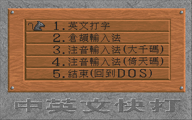
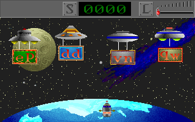
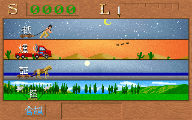

名稱：中英文快打1 (中文版) 簡介：大宇1992年出品的中英文打字練習軟體，附有幾個相關的小遊戲 [待補]。


備註：本版為1993年更新版，且已加入所需的倚天中文系統檔案。 保護：顏色密碼（相關檔案有加密，無法直接破解） 備註：若要使用中文打字，遊戲必須搭配倚天中文系統（執行SETUP.EXE設定相關環境）。 主要需要下列幾個檔案： changjei.tab phonetic.tab spcfont.15 stdfont1.15 stdfonts.15 spcfsupp.15 檔案：crack.rar = 破解檔